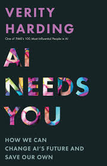

AI Literacy
2024-11-20
Emerging Trends in Office Work - Use of AI
Always embrace the unexpected
Comfortable being uncomfortable
History

Recent Developments
AI Won’t Replace Humans — But Humans With AI Will Replace Humans Without AI HBR
AI will affect every job and every industry. But it doesn’t mean that AI will replace humans. Instead, AI will augment human capabilities, making us more productive and efficient in our work.
What is AI?
Artificial Intelligence (AI):
The broad concept where machines simulate human intelligence.
AI allows machines to perform tasks like decision-making, speech recognition, and problem-solving.
Examples:
- Self-driving cars
- Virtual assistants like Siri or Alexa
What is Machine Learning (ML)?
Machine Learning (ML):
A subset of AI that enables machines to learn from data and improve performance over time.
ML doesn’t require explicit programming for each task.
Types of ML:
- Supervised Learning: Uses labeled data.
- Unsupervised Learning: Finds hidden patterns in unlabeled data.
- Reinforcement Learning: Learns through rewards and penalties.
Examples: - Netflix recommendation system - Spam filters in email
What is Natural Language Processing (NLP)?
Natural Language Processing (NLP):
A branch of AI focused on the interaction between computers and human (natural) languages.
Helps machines understand, interpret, and respond to human language.
Applications: - Sentiment analysis (understanding opinions) - Chatbots and language translation tools
Examples: - Google Translate - Virtual Assistants
Generative AI
Generative AI:
A form of AI that creates new content—whether it’s text, images, music, or other media—by learning from patterns in existing data.
Uses deep learning models such as transformers (like GPT) and GANs (Generative Adversarial Networks).
Examples: - GPT-4o for text generation - DALL-E for creating images from text descriptions - AI-generated music or art
Traditional AI vs. Generative AI
Traditional AI
Definition:
- Analyzes existing data to uncover patterns, trends, or insights.
Purpose:
- Understand and summarize what’s already there.
Techniques: - Statistical analysis, clustering, classification.
Examples: - Business reports summarizing sales performance. - Tools like Google Analytics offering insights based on historical data.
Generative AI
Definition:
- Focuses on creating new content by learning from existing patterns.
Purpose:
- To generate something new—whether it’s text, art, or even videos.
Techniques: - Deep learning models, transformers.
Examples: - GPT generating essays, DALL-E creating new images, AI composing music.
Generative AI in a Nutshell


LLMs


Starting Advice
Use the best large language model (LLM) model you can access
Treat the LLM as if it was your intern who is:
- smart, incredibly motivated, and eager to help
- completely lacks the context of what you are doing
→ provide background & context
→ iterate & experiment
→ be patient
Leading LLMs (as of 10/10/2024)
| Company | Model | Best Version | Released/Updated | Tokens | Data Cutoff | URL |
|---|---|---|---|---|---|---|
| OpenAI | GPT-4 | GPT-4o | 9/2024 | 128k | Oct 2023 | chatgpt.com |
| Gemini | 1.5 Pro 002 | 9/2024 | 1m | Nov 2023 | gemini.google.com | |
| xAI | Grok | Grok-2 | 8/2024 | 128k | Mar 2024 | xai.com |
| Anthropic | Claude 3.5 | Sonnet | 6/2024 | 200k | Apr 2024 | claude.ai |
| Meta | Llama | Llama-3.1 | 7/2024 | 128k | Dec 2023 | [open source] |
The Role of AI

AI role in office use for boosting productivity?
What challenges AI poses to the traditional role for office worker?
What are you?
What are you doing?
What are you as I am 10.
How do nuclear capabilities shape the strategic calculus of both Pakistan and India?
What will Iqbal say to youth about use of Social Media
Allama Iqbal, known for his deep reflections on spirituality, selfhood (Khudi), and societal progress, would likely have a nuanced view of social media’s impact on youth. Here’s what he might say:
1. Distraction from Purpose:
Iqbal would likely be concerned about social media’s ability to distract youth from their true purpose. He often emphasized the need for deep self-reflection and personal growth, and he might view the constant scrolling and superficial interactions on social media as hindrances to achieving Khudi. He might say, “The pursuit of likes and followers should not replace the pursuit of self-realization and greater goals.”
2. Lost Sense of Identity:
Iqbal believed in the importance of individual and cultural identity. He might see social media as contributing to a loss of self, where youth are too often influenced by external validation and trends rather than their inner values and cultural heritage. He could warn that “In a world of filters and illusions, do not lose your true self. Your identity is not what others see online, but what you discover within.”
3. Potential for Positive Change:
Despite his concerns, Iqbal would recognize the potential of social media as a powerful tool for positive change. He might encourage the youth to use these platforms to raise awareness about important issues, foster meaningful connections, and promote justice and knowledge. He could say, “Use your voice on these platforms as a means to awaken and uplift, not just to entertain.”
4. Spiritual and Intellectual Balance:
Iqbal would likely urge the youth to balance their time on social media with activities that promote intellectual growth and spiritual reflection. He might remind them that while social media can be a tool for learning and connection, it should not replace the deeper, more personal journey of seeking knowledge and spiritual fulfillment. He might caution, “Do not let fleeting moments of entertainment steal the time meant for the pursuit of wisdom and self-enlightenment.”
5. The Power of Influence:
Iqbal would be keenly aware of social media’s power to influence minds. He would advise youth to be discerning in their consumption of content, warning them not to fall prey to misinformation or hollow trends. He might say, “Just as a gardener tends to what he plants, so too must you guard your mind from the weeds of falsehood and idle talk.”
In summary, Iqbal would likely see both the dangers and the opportunities in social media. He would call on the youth to use these platforms wisely, ensuring they foster self-growth, preserve cultural identity, and contribute meaningfully to society, rather than getting lost in the distractions of the digital world.
Introduction
- AI Integration: Transforming working, learning, and administrative processes.
- Purpose: Enhance office outcomes, personalize learning, and streamline operations.
- Historical Context: Technology has always influenced education, from the printing press to digital learning platforms.
AI as a Partner in Learning
- Personalized Learning: Tailoring education to individual student needs.
- Enhanced Engagement: Interactive and adaptive learning experiences.
- Accelerated Achievement: AI tools that support and enhance student performance.
Practical Applications of AI
- Grading and Assessments
- Automated grading for efficiency and consistency.
- AI-driven feedback to aid student improvement.
- Administrative Tasks
- Managing student interactions and communications.
- Streamlining course management and scheduling.
- Content Creation
- Developing customized assignments and learning materials.
- Enhancing lecture outcomes through AI-generated resources.
AI Tutoring and Support
- AI Tutors (e.g., Khanmigo, Conmigo)
- Provide 1-to-1 tutoring with significant performance improvements.
- Scalable solutions to address diverse student needs.
- Writing and Reading Coaches
- Assist in developing writing skills through collaborative AI feedback.
- Enhance reading comprehension and critical analysis with interactive tools.
Enhancing Critical Thinking and Idea Generation
- Idea Generation
- AI assists in brainstorming and refining research questions.
- Facilitates a high volume of ideas for academic projects.
- Critical Thinking
- AI tools that challenge students to think deeper and more analytically.
- Support in developing robust problem-solving skills.
Ethical Challenges and Considerations
- Academic Integrity
- Addressing AI-assisted cheating and plagiarism.
- Reevaluating academic standards in the AI era.
- Bias and Fairness
- Ensuring AI tools are free from biases that could affect student evaluations.
- Privacy Concerns
- Protecting student data and ensuring ethical use of AI.
Future Implications
- Evolving Educational Roles
- Educators transitioning to facilitators and guides in AI-enhanced environments.
- Skill Development
- Preparing students for AI-integrated workplaces.
- Emphasizing critical thinking and adaptability alongside AI proficiency.
- Policy and Governance
- Developing policies that govern AI use in educational settings.
- Ensuring equitable access to AI resources for all students.
The Coming Wave of Technology
- Advanced AI and Biotechnology
- Benefits: Unlock secrets of the universe, cure diseases, create a healthier, sustainable world.
- The Dangers
- Manipulating DNA: implications for individuals and ecosystems.
- Choice: Unparalleled possibilities vs. unimaginable perils.
- Exponential speed of change in technology (e.g., LLMs).
- The Rise of AI
- Four years ago, no one believed in LLMs; now, everyone talks about them.
- Future: Superintelligence in the next decade?
- Question: How do we respond?
The Dilemma
- Replicating Our Unique Intelligence
- The Luddite reaction: fears, bans, moratoriums.
- Challenge: balancing immense benefits and potential perils.
- The Containment Problem
- Technology spreads exponentially, nearly impossible to stop.
- Examples: Industrial Revolution, AI, Synthetic biology.
- Inventions cannot be uninvented; knowledge proliferates.
AI’s Role in Idea Generation
- Generating Ideas
- AI assists in generating and refining ideas, questions, and thought processes.
- High Volume of Ideas
- AI can produce a large quantity of ideas, which humans can further iterate on.
The best way to have a good idea is to have lots of ideas. Humans will need to continue the process of prototyping, testing, and iterating, but humans consistently struggle to produce large quantities of different and new ideas.
Two Sigma Problem

AI in Policy and Governance
- Public Policy Development
- AI analyzes vast amounts of data to predict economic trends and inform policy decisions.
- Scenario Analysis
- AI simulates multiple policy scenarios to assess potential outcomes.
- Ethical AI Usage
- Emphasizing the need for ethical standards and responsible AI usage in policymaking.
Enhancing Learning Outcomes
- Personalized Feedback
- AI provides tailored feedback to help students improve.
- Motivation and Agency
- Building AI feedback into assignments can increase motivation, learning, and agency.
- Collaborative Learning
- Combining human intelligence with AI for educational advancement.
Explain Solow Growth model to an undergraduate studet in 70 words.
Simulate the Solow growth model and plot the results in a four chart.
Data Analysis
Conclusion: Embracing AI in Education
- Opportunities and Challenges
- Balancing AI benefits with ethical considerations.
- Guiding the Future
- Educators and institutions must lead in integrating AI responsibly.
- Enhancing Learning Outcomes
- Leveraging AI to create more effective, engaging, and personalized educational experiences.
“Graduating students who can write only as well as AI seems like a recipe for unemployment.”
Resources
Re-inventing Education for the Digital Age | David Middelbeck | TEDxMünster
Literature Review: consensus, scispace, lens
Policy Advisor
Fiscal policy advisor
Economics expert
Tutor me
Duolingo
R for economics and Econometrics
Stata ai
curipid.com Lessons in seconds
murf.ai Text to speech
Myheritage
Snythesia video maker
PsiSpace for literature review
litmaps for literature review
Otter ai for speech to text
Useful Books (2024)




Thank You!
Thank You
Prof. Dr. Zahid Asghar, QAU, Islamabad
What Sets Successful People Apart? A Commitment to Reading, Continuous Learning, and Adapting to Technological Change
Questions or Comments?
Contact Information:
Email: g.zahid@gmail.com
Twitter: @Zahadasghar